أكاديمية أسس
أول منصة عربية تعليمية للبرمجيات الحرّة
نهتم بالبرمجيات الحرة
بسبب توافق جنو/لينكس مع أنظمة أخرى من عائلة يونكس، نمت معدلات استخدام جنو/لينكس كنظام تشغيل للخوادم بسرعة، وجعل ذلك جنو/لينكس مستخدمًا ومنذ فترة مبكرة في بيئة الخوادم مشغلًا تطبيقات كخوادم الويب،
اعرف المزيد عنّامحتوى تعليمي عربي
بدأ ريتشارد ستالمن مشروع جنو في 27 سبتمبر من العام 1983، لبناء نظام تشغيل حر بالكامل يوفر لمستخدمي الحاسوب حريتهم ويعفيهم من الاضطرار لاستخدام برمجيات محتكرة
اكتشف البرامج الآنمنصة تفاعلية
مشروع جنو كان يهدف إلى إنشاء نظام تشغيل شبيه بيونكس، وبالفعل بدأ العمل عليه في 1985 وتم برمجة العديد من الأدوات التي تخص نظم التشغيل مثل محررات النصوص والمجمعات،
انضم إليناأحدث الدورات
لينكس 101
- 
- أنظمة
- 3 أسابيع
Git 101
- برمجيات
- 3 أسابيع
Kubernetes
- أنظمة
- 3 أسابيع